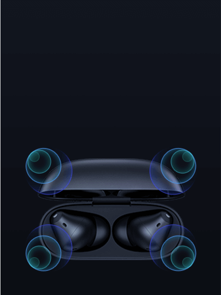
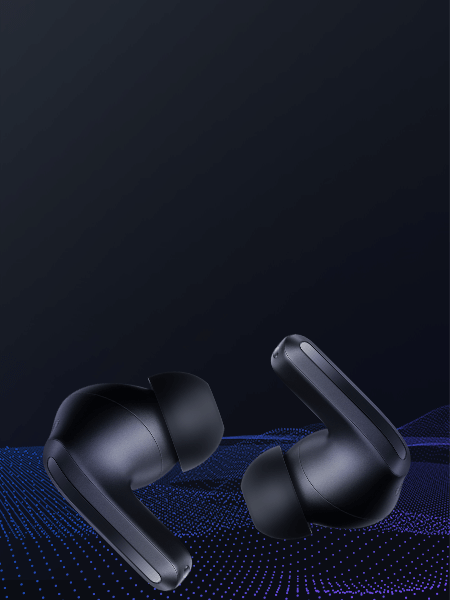
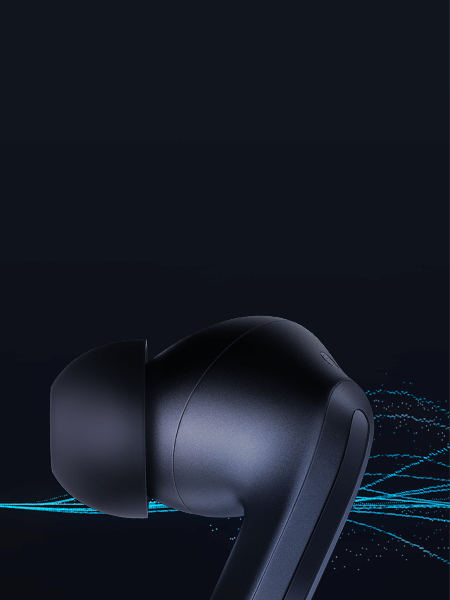

O som que você quer
Áudio sem fio de alta resolução
Suporta codec de áudio LDAC avançado*
Qualidade de som de alta fidelidade
Drivers dinâmicos duplos

Som imersivo*
A melhor experiência imersiva

Cancelamento de ruído ativo de até 43dB*
Ampla frequência ANC de 30-3000Hz*

Tecnologia aprimorada para reduzir o ruído do vento
Maior imersão durante esportes ao ar livre

Ultra-longa duração de bateria de até 36 horas*
Até 9 horas de uso com uma única carga*
Até 2 horas de música com uma carga de 5 minutos*

Conectividade inteligente com dois dispositivos
Alterne sem esforço entre seu smartphone e computador

3 microfones e cancelamento de ruído para chamadas

Design ergonômico
Ajuste confortável

Áudio sem fio de alta resolução Som incrível
Uma sinfonia para seus ouvidos - Redmi Buds 4 Pro é certificado pela Hi-Res Audio Wireless e suporta codec de áudio LDAC em velocidades de transmissão de até 990kbps, bem como áudio de resoluções de 96kHz/24bit e acima.
Qualidade de som de alta fidelidade

Drivers dinâmicos duplos
Crie seu sistema de som pessoal
O Redmi Buds 4 Pro possui um novo sistema de driver dinâmico duplo, que consiste em um diafragma de liga de alumínio de 10mm e um diafragma de titânio de 6mm para frequências agudas. Juntos, os dois drivers se combinam para fornecer agudos cristalinos e graves ricos em uma ampla variedade.

10mm
driver dinâmico de liga de alumínio
6mm
driver dinâmico de titânio para sons agudos

Experimente som de cinema
Som imersivo
Para uma experiência imersiva ao vivo
O Redmi Buds 4 Pro possui um sistema de som imersivo totalmente novo, que usa um algoritmo de som HRTF próprio da Xiaomi para simular o som da vida real e proporcionar uma experiência verdadeiramente imersiva ao assistir a vídeos, compatível com várias fontes de áudio e dispositivos de reprodução.*
Alta tecnologia de cancelamento de ruído

Cancelamento de ruído ativo de até 43dB
Reduza efetivamente o ruído indesejado
Os fones podem reduzir o ruído em até 43dB, bloqueando até 99,3% do ruído externo*, permitindo-lhe desfrutar da sua música em paz e sossego.
Cancelamento de ruído leve

Cancelamento de ruído balanceado
Cancelamento de ruído profundo

Cancelamento de ruído ativo com IA adaptável
Alterna de forma inteligente entre 3 níveis de cancelamento

Cancelamento de ruído leve
| Escritórios, bibliotecas

Cancelamento de ruído profundo
| Estações de metrô, aeroportos

Cancelamento de ruído balanceado
| Cafés, parques
Modo de transparência dupla
Ouça conversas e escute melhor o mundo a sua volta.
No modo de transparência regular você pode ouvir o ambiente sem precisar remover os fones de ouvido. Você também pode alternar para o modo de voz aprimorado quando precisar falar com alguém cara a cara.
Modo de transparência regular

Melhora a voz


Inovadora tecnologia de redução de ruído do vento
Corra o quanto desejar e deixe o vento para trás
Cada fone possui embutido um protetor de vento de metal para reduzir efetivamente o ruído do vento, bem como um algoritmo próprio de redução de ruído do vento que liga automaticamente quando o vento atinge uma determinada velocidade para que você possa aproveitar suas atividades ao ar livre sem ser incomodado.

Inovadora tecnologia de redução de ruído do vento
Corra o quanto desejar e deixe o vento para trás

Cada fone possui embutido um protetor de vento de metal para reduzir efetivamente o ruído do vento, bem como um algoritmo próprio de redução de ruído do vento que liga automaticamente quando o vento atinge uma determinada velocidade para que você possa aproveitar suas atividades ao ar livre sem ser incomodado.
Ultra-longa duração da bateria de até 36 horas*
Corra uma maratona com sua música favorita
Ouça até 9 horas de música com uma única carga ou até 36 horas quando usado com o estojo de carregamento. E se você está com pressa e esqueceu de recarregar, os fones reproduzem até 2 horas de música após um carregamento de apenas 5 minutos.
Até 9
horas
Até 36
horas
Única carga
Tempo de uso total da bateria com estojo
5
min
Tempo de carregamento para
Até 2
horas
De reprodução de música


Conectividade inteligente de dois dispositivos*
Alterne tranquilamente entre seu smartphone e computador
Os fones podem se conectar a dois dispositivos, seja Android, iOS ou Windows, tudo ao mesmo tempo, permitindo que você use o mesmo fone de ouvido em dois dispositivos simultaneamente quando estiver no escritório. Em dispositivos com sistema MIUI, o pop-up MIUI para emparelhamento rápido aparece automaticamente quando você abre o estojo de carregamento (com fones de ouvido) próximo ao telefone.*

Controle por toque
Controle a música e alterne os modos com a ponta dos dedos
Cada fone é equipado com um sensor que permite pausar a reprodução de música e alternar os modos com um toque curto ou longo.


Controle por toque
Design ergonômico
Ajuste confortável
O Redmi Buds 4 Pro apresenta um design inovador e elegante com bordas curvas, além de ser ergonomicamente projetado para reduzir a pressão no canal auditivo e pesar apenas cerca de 5 gramas garantindo um ajuste confortável.


Midnight Black
Moon White


Xiaomi Earbuds*
Personalize facilmente seus fones
Baixe o aplicativo Xiaomi Earbuds para ajustar as configurações de cancelamento de ruído e controle de toque do seu Redmi Buds 4 Pro. Você está no controle — ajuste as configurações para o som ideal e instale atualizações online.
Muito mais recursos para você descobrir.

Personalizado e divertido

Resistência à poeira e água IP54*
Ideal para treinos –
design resistente ao suor

Detecção automática*
A reprodução é pausada automaticamente quando você remove os fones
e retoma quando você os coloca de volta.

Encontre seus fones*
Você pode usar o aplicativo Xiaomi Earbuds
para localizar seus fones de ouvido tocando um som em qualquer um deles, quando estiver dentro do alcance da conexão Bluetooth.
*As imagens nesta página são meramente ilustrativas e podem não ser a representação exata do produto. Os parâmetros do produto são apenas para referência. Alguns parâmetros do produto podem variar devido a fatores externos, como ambiente e diferenças nos sistemas de smartphones. Consulte o produto real para obter detalhes.
*Teste de cancelamento de ruído realizado pelo fabricante. Os resultados reais podem variar dependendo das condições de uso. Tocar e segurar um fone de ouvido apenas permite alternar entre os modos ANC e Transparência. Configurações do modo ANC e transparência disponíveis apenas no aplicativo Xiaomi Earbuds.
*Para experimentar áudio de alta resolução e LDAC a 990 kbps certifique-se de que o LDAC foi ativado em smartphones Android™ OS compatíveis com a seleção correta da taxa de bits com o som imersivo desativado.
*O som imersivo é aplicável a músicas e vídeos de aplicativos que suportam essa função. O som imersivo está desativado por padrão, configurações disponíveis apenas no aplicativo Xiaomi Earbuds. O uso de codec de áudio LDAC e som imersivo são mutuamente exclusivos.
*Você pode encontrar seus fones de ouvido via som no aplicativo Xiaomi Earbuds. Os fones de ouvido não suportam esta função quando colocados no estojo de carregamento. De acordo com os dados do laboratório interno da Xiaomi, ao procurar seus fones de ouvido via som a uma curta distância, a distância entre o telefone e os fones de ouvido deve ser de 10 metros em um ambiente silencioso e acessível. Os fones de ouvido e o telefone devem estar conectados via Bluetooth. As distâncias reais podem variar dependendo das condições ambientais.
*Teste IP54 à prova de poeira e água. De acordo com o GB/T 4208-2017. Classificação de proteção de gabinete (código IP), passou no teste realizado pelo Instituto de Supervisão e Inspeção de Qualidade de Produto de Suzhou. O relatório de ensaio n. é WPHE220067. O resultado do teste mostrou que está em conformidade com o padrão GB/T 4208-2017. A classificação IP54 se aplica aos próprios fones de ouvido, não ao estojo de carregamento. Por favor, não use seus fones de ouvido perto de água quente, seus fones de ouvido não podem ser usados ao tomar banho. Por favor,evite o uso de seus fones de ouvido durante exercícios extenuantes, o suor durante o exercício pode causar danos ao dispositivo. Este produto é à prova de respingos, resistente à água e à poeira no momento da compra, no entanto, essas propriedades não são permanentes e podem diminuir com o tempo com o desgaste diário. Sua garantia não cobre danos causados ao seu dispositivo por imersão em líquido.
*Condições de teste de duração da bateria e carregamento rápido: Conecte-se ao Xiaomi 12 Pro, o nível da bateria dos fones de ouvido é 100%, o volume dos fones de ouvido é ajustado para 50%, o modo de codificação Bluetooth é AAC e o recurso ANC, modo de transparência, imersivo som e conexão de dispositivo duplo são desligados através do aplicativo Xiaomi Earbuds. Item de teste: Descarregue totalmente a bateria do Redmi Buds 4 Pro enquanto reproduz o áudio até que um dos fones pare de tocar. Certifique-se de que a porta de carregamento esteja livre de líquidos e objetos estranhos antes de carregar. Os dados de carregamento do fone de ouvido e vida útil da bateria foram recuperados do teste interno realizado pelo fabricante. As horas reais de uso podem variar dependendo das condições de uso, nível de carga e fatores ambientais.
*O carregamento rápido de 5 minutos requer que a bateria do estojo de carregamento esteja em 30% ou mais.
*A conectividade de dispositivo duplo está ativada como padrão, a experiência pode variar dependendo do dispositivo. Faça o download do aplicativo Xiaomi Earbuds para desligar. Os aplicativos de computador de terceiros são necessários para dar suporte à pausa ou retomada síncrona ao atender ou encerrar chamadas telefônicas. O nome do recurso pode ser diferente das configurações reais.
*As configurações de gestos e a detecção no ouvido estão disponíveis apenas no aplicativo Xiaomi Earbuds.
*O aplicativo Xiaomi Earbuds está disponível para download na Google Play Store. O aplicativo Xiaomi Earbuds não está disponível para dispositivos iOS.
*Apenas dispositivos Xiaomi e Redmi com as versões MIUI mais recentes suportam MIUI Pop-up para Emparelhamento Rápido. Modelos compatíveis: POCO F4 GT, Xiaomi 12 Pro, Xiaomi 12, Redmi Note 11 Pro, Redmi Note 11S, Redmi Note 11, Redmi Note 11 Pro 5G.
*A marca e os logotipos Bluetooth® são marcas registradas de propriedade da Bluetooth SIG, Inc. e qualquer uso de tais marcas pela Xiaomi inc. está sob licença. Outras marcas registradas e nomes comerciais são de seus respectivos proprietários.
*Para aproveitar a conectividade de dispositivo duplo entre dois dispositivos de smartphone Xiaomi/Redmi, ative a função através do aplicativo Xiaomi Earbuds em apenas um smartphone - esse recurso funcionará via conexão Bluetooth tradicional.